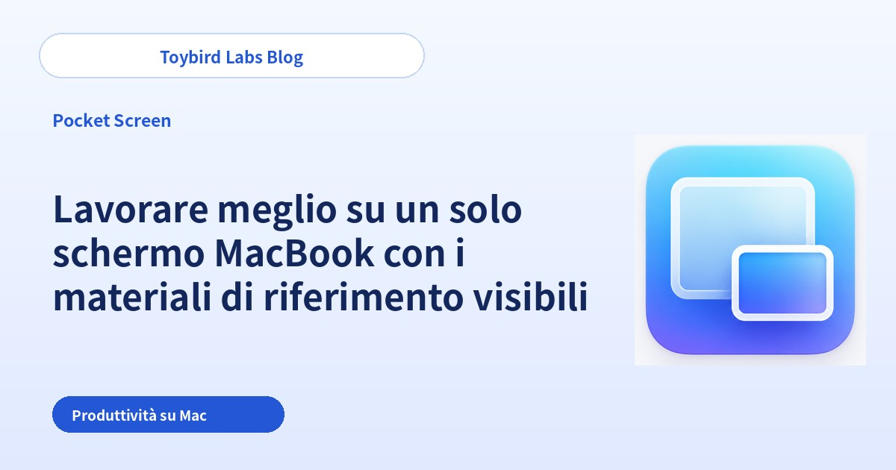
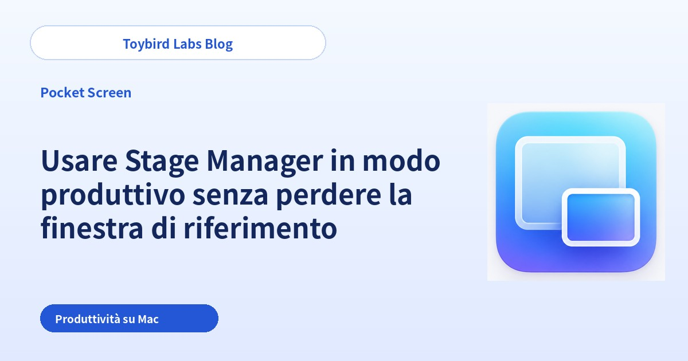
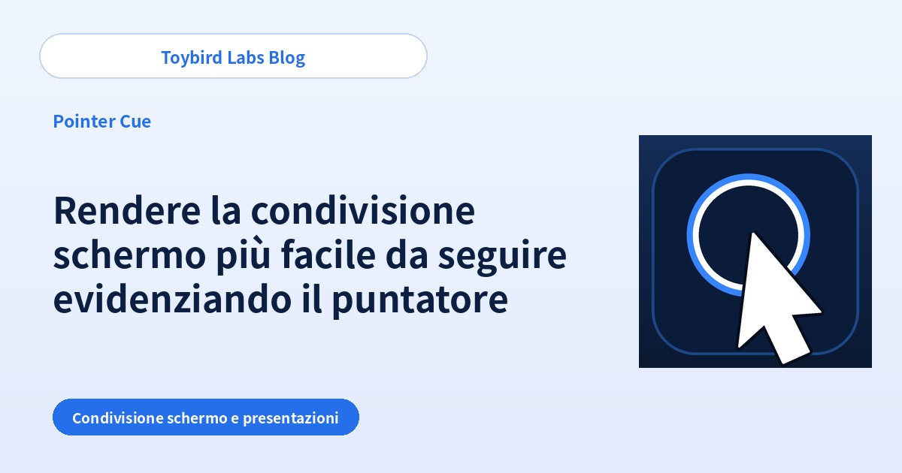

Toybird Labs Blog
Idee pratiche per lavorare e imparare meglio
Guide passo passo per usare l’IA generativa nel lavoro, insieme a consigli pratici su app per Mac, Windows e strumenti per lo studio.
Tutti gli articoli
Da leggere per primo

Come usare ChatGPT nel lavoro: 5 consigli e 10 esempi di prompt
Impara a usare ChatGPT nel lavoro con cinque abitudini pratiche, due esempi dettagliati e dieci attività da provare subito.
Guide pratiche per attività

Come scrivere un’e-mail di rifiuto cortese con ChatGPT
Crea con ChatGPT un’e-mail di rifiuto chiara e professionale specificando richiesta, vincolo, alternativa e passo successivo.

Come trasformare gli appunti di una riunione in attività con ChatGPT
Usa ChatGPT per separare decisioni, attività, responsabili, scadenze e domande aperte da appunti di riunione disordinati.

Risposta ChatGPT fuori obiettivo: 6 cause e prompt per correggerla
Scopri perché una risposta ChatGPT è troppo lunga, usa il tono sbagliato o aggiunge fatti non supportati, e correggila con istruzioni mirate.

Come scrivere risposte ai clienti con ChatGPT
Crea e-mail di assistenza accurate con ChatGPT separando messaggio del cliente, fatti confermati, informazioni sconosciute e prossima azione.

Come fare in modo che ChatGPT chieda le informazioni mancanti
Usa prompt che fanno chiedere a ChatGPT le informazioni mancanti una domanda alla volta, in una lista breve o con opzioni.

Come riassumere documenti lunghi con ChatGPT per il lavoro
Riassumi documenti lunghi con ChatGPT definendo lettore, decisione, lunghezza, prove necessarie e gestione delle informazioni mancanti.

Come adattare un testo a pubblici diversi con ChatGPT
Usa ChatGPT per presentare gli stessi fatti a clienti, dirigenti, team interni o principianti senza cambiare il significato.

Come confrontare opzioni e creare una tabella decisionale con ChatGPT
Confronta prodotti o servizi con ChatGPT definendo criteri, priorità, dati mancanti e regole per la raccomandazione.

Come allenarsi nelle vendite con un role-play in ChatGPT
Configura un role-play commerciale realistico con profilo del cliente, una domanda per volta, obiezioni e feedback strutturato.
Lavorare meglio su un solo schermo MacBook

Lavorare meglio su un solo schermo MacBook con i materiali di riferimento visibili
Scopri come lavorare meglio su un solo schermo MacBook mantenendo visibili PDF, pagine web o chat. Confronta affiancamento, Split View, Stage Manager e finestra flottante.

Ridurre i cambi di finestra su Mac e mantenere visibili i riferimenti
Riduci i continui cambi di finestra su Mac mantenendo visibili PDF, pagine web, chat o dashboard. Confronta i layout di sistema con una finestra di riferimento sempre visibile.

Usare Stage Manager in modo produttivo senza perdere la finestra di riferimento
Usa Stage Manager su Mac senza perdere continuamente PDF, pagine web o chat. Confronta il gruppo comune con una referenza flottante persistente tra i set.
Rendere più chiare riunioni da remoto e demo di prodotto

Rendere la condivisione schermo più facile da seguire evidenziando il puntatore
Aiuta il pubblico a seguire il puntatore durante Zoom, Teams o Google Meet. Confronta impostazioni di sistema, ritmo e anello su richiesta.
Rendere più chiare le presentazioni e le demo di prodotto su Mac
Rendi più chiare presentazioni e demo su Mac indicando quale finestra conta. Confronta pulizia, condivisione di una finestra e focus sulla finestra attiva.

Guidare l’attenzione durante la condivisione schermo: puntatore, cornice e finestra attiva
Rendi la guida più chiara: puntatore per un comando, cornice per un’area e focus finestra per l’app corrente.